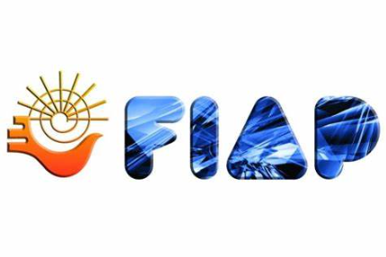

Fundación James Beard
1945
La Premios de la Fundación James Beard son premios anuales presentados por la Fundación James Beard para reconocer a los profesionales culinarios en los Estados Unidos. Los premios reconocen a chefs, restauradores, autores y periodistas cada año, programados para el cumpleaños del 5 de mayo de James Beard.

Las estrellas Michelin son un reconocimiento que se les da a los restaurantes y hoteles que destaquen por su buen servicio, buena calidad y sobre todo creatividad. Una estrella Michelin es el máximo galardón para un chef, por eso hoy te vamos a dar consejos para ganar una. te recomendamos
Los Clio Awards se desarrollan durante la Semana de la Publicidad en Nueva York. Los reconocimientos de este concurso publicitario se entregan en una ceremonia espectacular que celebra el mejor trabajo creativo del año.
Las codiciadas estatuillas Grand, Gold, Silver y Bronze Clio son un reconocimiento a la excelencia creativa en distintas áreas y, particularmente, a las agencias que saben cómo hacer un anuncio publicitario exitoso.

Festival Iberoamericano de la Publicidad
2021
Es uno de los festivales de publicidad que por 50 años ha reconocido la creatividad en todos los formatos publicitarios de Iberoamérica. El objetivo de este galardón es reconocer la excelencia en ideas que transforman, inspiran, elevan y apasionan audiencias.
Creado en 1969 en Argentina, el Festival Iberoamericano de la Publicidad (FIAP) cuenta con una rigurosa evaluación de jurados conformado por más de 200 ejecutivos y creativos TOP de la industria de la publicidad; quienes definirán las piezas ganadoras.